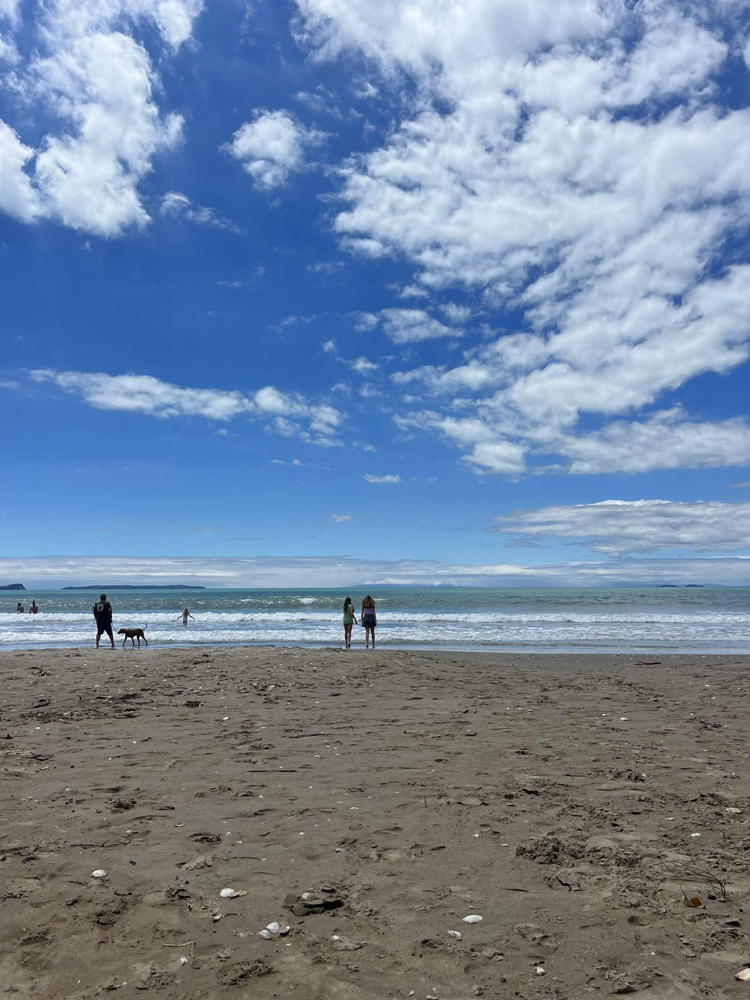
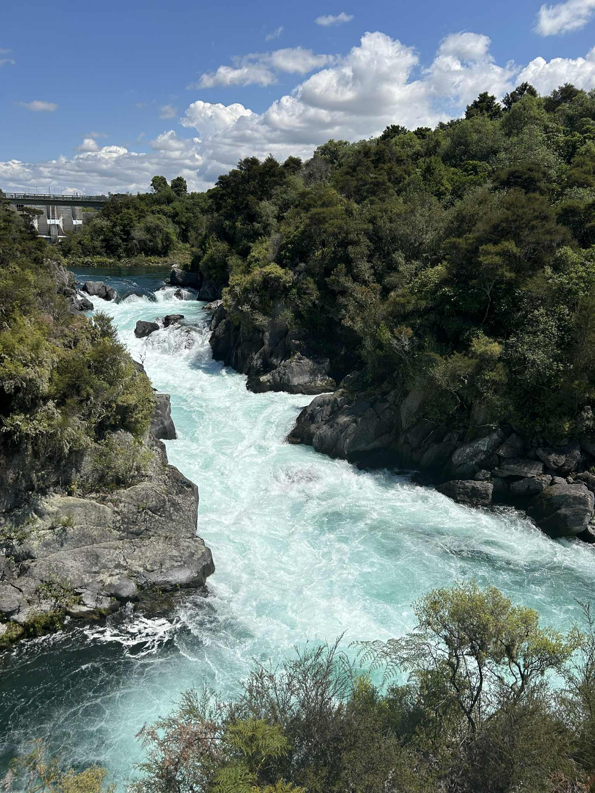

Blogs
Top 5 beaches you MUST visit in Auckland, NZ
Posted on 15/02/2025

Auckland, often called the “City of Sails,” is surrounded by stunning coastlines that offer everything from wild surf to calm, golden sands. Whether you're after a peaceful picnic spot, a place to surf, or simply somewhere to enjoy breathtaking coastal views, Auckland's beaches have it all. Here are the top five beaches you absolutely must visit when exploring this beautiful region.
1. Long Bay Beach
Located on Auckland's North Shore, Long Bay Beach is perfect for families and relaxation seekers alike. With its long stretch of golden sand, safe swimming conditions, and plenty of picnic areas, it's a local favorite. The nearby Long Bay Regional Park also offers scenic walking tracks and shaded spots ideal for a full day outdoors.
2. Muriwai Beach
If you're after something wilder, head to Muriwai Beach on Auckland's west coast. This dramatic black-sand beach is known for its rugged beauty and powerful surf, making it a hotspot for surfers. Don't miss the famous gannet colony perched on the cliffs — it's one of only a few in New Zealand and offers incredible photo opportunities.
3. Wenderholm Beach
Just north of Orewa, Wenderholm Beach combines calm waters with lush native bush. It's part of Wenderholm Regional Park, one of the region's most beautiful coastal reserves. Here you can swim, kayak, or take a scenic walk up to the lookout point for panoramic views over the Hauraki Gulf.

4. Tāwharanui Beach
Tāwharanui Beach is a hidden gem and a paradise for nature lovers. Set within the Tāwharanui Regional Park, this beach features white sand, crystal-clear water, and a marine reserve teeming with sea life. It's also one of the best swimming and snorkeling spots near Auckland, with native birds and sheep adding to the tranquil atmosphere.
5. Takapuna Beach
Just a short drive from Auckland's city center, Takapuna Beach offers a perfect blend of coastal beauty and urban convenience. The beach is ideal for swimming and paddleboarding, as well as wind-surfing on windy days and it's surrounded by trendy cafés and shops. If your not much of a swimmer, this beach is perfect for long walks and talks. On clear days, you'll enjoy spectacular views of Rangitoto Island across the water.
From the peaceful shores of Long Bay to the wild waves of Muriwai, Auckland's beaches showcase the region's natural diversity and beauty. Whether you're an adventurer, a photographer, or simply in search of a relaxing seaside escape, these five beaches promise unforgettable experiences — all just a short drive from the city.
Spend a day in Auckland, NZ - A Perfect One-Day Itinerary
Posted on 22/01/2025
If you ever find yourself in Auckland, New Zealand, and only have one day to explore, don't worry — you can still experience some of the city's best spots in just 24 hours. From incredible views atop the Sky Tower to a scenic ferry ride and a classic Kiwi burger to wrap it all up, here's how to spend one unforgettable day in Auckland, starting from the charming seaside suburb of Devonport.
Morning: Ferry Ride from Devonport to the City
Start your day in Devonport, one of Auckland's most picturesque suburbs. Grab a coffee from a local café, then head down to the ferry terminal. The ferry ride to the city center only takes about 12 minutes, but it's one of the most scenic short trips you'll ever take — with panoramic views of the Auckland skyline and the sparkling Waitematā Harbour. Make sure to have your camera ready!

Mid-Morning: Soak in the Views from the Sky Tower
Once you arrive downtown, head straight to the Sky Tower, Auckland's most iconic landmark. Standing at 328 meters tall, it offers unbeatable 360° views of the city and beyond. You can take in the stunning skyline, the harbor, and even spot volcanic cones in the distance. For the brave, there's also the SkyWalk — an outdoor walk around the tower's edge!
Lunchtime: Explore the Viaduct Harbour and Grab a Drink
After your high-altitude adventure, stroll down to Viaduct Harbour, Auckland's vibrant waterfront area. Lined with yachts, restaurants, and lively bars, it's the perfect place to stop for lunch or a refreshing drink by the water. The atmosphere is relaxed yet buzzing — you'll feel the city's energy mixed with that laid-back Kiwi vibe.
Afternoon: A Bit of Shopping and a Visit to the Fish Market
Next, make your way to one of Auckland's popular shopping malls — Commercial Bay is a great option, located just a short walk from the Viaduct. Here you can browse through boutique stores, pick up souvenirs, or simply window-shop while soaking in the city's modern charm. After that, head to the Auckland Fish Market, where you'll find fresh seafood and local delicacies. Even if you're not planning to buy anything, it's worth visiting for the atmosphere — the smell of freshly grilled fish, the chatter of locals, and the ocean breeze make it a truly Auckland experience.

Evening: Kiwi Burger at McDonald's and Sunset in Devonport
End your day with something uniquely New Zealand — a Kiwi Burger at McDonald's. It's not your typical burger — this one comes with beetroot, egg, and a distinct local flavor that you won't find anywhere else in the world. Once you've had your fill, take the ferry back to Devonport just in time for sunset. Find a spot along the beach or head up to Mount Victoria for sweeping views of the city lights twinkling across the harbor — the perfect way to end your Auckland adventure.
Auckland might be big, but even in one day, you can capture its spirit — a city where urban life meets seaside charm, and every corner has something new to discover. From morning ferries to sunset views, this one-day itinerary will leave you wanting to come back and see even more of the “City of Sails.”
Fun activities to do in Auckland
Posted on 28/12/2024
Auckland isn't just New Zealand's biggest city — it's also one of the most exciting playgrounds you could imagine! Whether you're into thrill rides, beach days, or simply hanging out with friends, there's always something fun happening. Here are some of the best ways to fill your days (and nights!) with laughter, energy, and adventure.
Sing Your Heart Out at Karaoke
Ready to unleash your inner pop star? Book a private karaoke booth and get ready for a night of pure fun with just you and your friends. No stage fright here — it's all about singing your favorite songs at the top of your lungs, laughing at the dramatic performances, and maybe discovering who in your group secretly has the voice of an angel. Grab a drink, and make it a night to remember!


Feel the Adrenaline at Rainbow's End
If you love a good thrill, Rainbow's End is your go-to destination. This theme park has everything — roller coasters, log flumes, and even kid-friendly rides if you're bringing the family. The best part? You'll leave with that satisfying mix of excitement and exhaustion that only comes from a day of pure fun.
Challenge Your Friends at Mini Golf
Who doesn't love a bit of friendly competition? Auckland has some amazing mini golf spots — from glow-in-the-dark indoor courses to scenic outdoor ones. Whether you're a putting pro or just in it for the laughs, it's the perfect casual activity for a sunny afternoon (or a rainy day escape).
Catch the Auckland Breakers in Action

If you're in town during basketball season, don't miss a Breakers game at Spark Arena. The energy is electric — the crowd's cheering, the music's pumping, and every shot gets you on your feet. Even if you're not a huge basketball fan, the atmosphere will win you over instantly.
Hit the Waves — Surfing or Boogie Boarding!
Auckland's coastlines are a surfer's dream. Head out west to Piha or Muriwai Beach for awesome waves and black sand, or grab a boogie board and ride the gentler surf at Orewa or Takapuna Beach. Whether you're catching your first wave or wiping out in style, you'll have an absolute blast.
Go Camping Under the Stars
After all the city excitement, take a break and sleep under the stars! Auckland has some incredible camping spots — from Tāwharanui Regional Park to Wenderholm. Pitch your tent, light a campfire, and fall asleep to the sound of the waves. It's the perfect way to unwind and soak up New Zealand's natural beauty.
Auckland is the kind of city where you can go from screaming on a roller coaster to singing at karaoke — all in the same day. Whether you're chasing thrills, laughs, or just good vibes with your friends, there's always something fun waiting for you here. So go on — dive in, sing loud, surf hard, and make some unforgettable memories!
Weekend getaway: Visit Taupo
Posted on 17/01/2024

Looking for the perfect weekend escape from the city? Head to Taupō, the heart of New Zealand's North Island — where adventure, relaxation, and natural beauty come together in one stunning spot. From geothermal wonders to crystal-clear waters, Taupō is a place that will recharge your spirit and leave you wanting more.
Take a Dip in Lake Taupō
Start your weekend by swimming in Lake Taupō, New Zealand's largest lake — and one that's actually sitting inside an ancient volcanic crater! The water is beautifully clear, and if you're lucky, you might even find one of the warm geothermal “hot spots” near the shore where natural heat bubbles up through the sand. It's like nature's own hot tub!
Swim in the River and Feel the Current
For something a little more adventurous, take a swim in the Waikato River. The water is fresh and clean, and the gentle (sometimes not-so-gentle!) current makes it an exciting experience. Just pick a safe swimming area and let the flow carry you for a while — it's both refreshing and exhilarating.

Visit the Mighty Huka Falls
No trip to Taupō is complete without seeing Huka Falls. This natural powerhouse sends more than 200,000 liters of water per second thundering through a narrow gorge — it's loud, dramatic, and absolutely breathtaking. You can view it from the bridge above or take a jet boat ride to feel the spray up close. Either way, it's a sight you'll never forget.
Relax at Wairakei Natural Thermal Valley
After all that adventure, it's time to unwind. Head to the Wairakei Natural Thermal Valley, where you can soak in warm mineral pools surrounded by native bush and steaming geothermal activity. The peaceful atmosphere and natural warmth make it the perfect spot to relax your muscles and end your weekend on a soothing note.
Taupō has that perfect mix of thrill and tranquility — one moment you're feeling the rush of the river, and the next you're soaking in a natural hot spring under the open sky. Whether you're an adventurer or a chill-seeker, this lakeside gem promises a weekend you'll never forget. Pack your swimsuit, grab your camera, and get ready for a little magic in the middle of New Zealand!